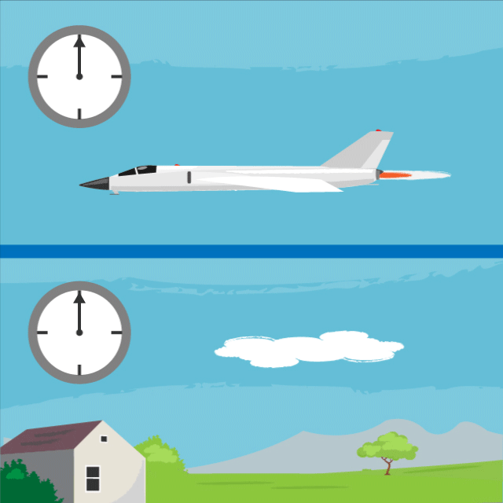
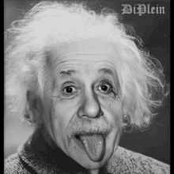
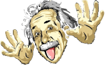

Scientific Theory
We all travel in time and we are all traveling in time at approximately the same speed, 1 second per second! When we think of the phrase "time travel," we are usually thinking of traveling faster than 1 second per second. That kind of time travel sounds like something you'd only see in movies or science fiction books. Could it be real? Science says yes! We know that time travel is possible because more than 100 years ago, a famous scientist named Albert Einstein came up with an idea about how time works. He called it relativity. This theory says that time and space are linked together. Einstein also said our universe has a speed limit: nothing can travel faster than the speed of light (186,000 miles per second).
What does this mean for time travel? Well, according to this theory, the faster you travel, the slower you experience time. Scientists have done some experiments to show that this is true. For example, there was an experiment that used two clocks set to the exact same time. One clock stayed on Earth, while the other flew in an airplane (going in the same direction Earth rotates). After the airplane flew around the world, scientists compared the two clocks. The clock on the fast-moving airplane was slightly behind the clock on the ground. So, the clock on the airplane was traveling slightly slower in time than 1 second per second.
Yes, time travel is indeed a real thing. But it's not quite what you've probably seen in the movies. Under certain conditions, it is possible to experience time passing at a different rate than 1 second per second. And there are important reasons why we need to understand this real-world form of time travel. As I've mentioned folks, time is relative, it doesn't really exist, so time is experienced differently by everybody!

Time travel into the past, which is what people usually mean by time travel, is a much more uncertain proposition. There are many solutions to Einstein's equations of General Relativity that allow a person to follow a timeline that would result in her (or him) encountering herself--or her grandmother--at an earlier time. The problem is deciding whether these solutions represent situations that could occur in the real universe, or whether they are mere mathematical oddities incompatible with known physics. No experiment or observation has ever indicated that time travel is occurring in our universe. Much work has been done by theoretical physicists in the past decade to try to determine whether, in a universe that is initially without time travel, one can build a time machine--in other words, if it is possible to manipulate matter and the geometry of space-time in such a way as to create new paths that circle back in time.
How could one build a time machine? The simplest way currently being discussed is to take a wormhole (a tunnel connecting spatially separated regions of space-time) and give one mouth of the wormhole a substantial velocity with respect to the other. Passage through the wormhole would then allow travel to the past.
Easily said--but where does one obtain a wormhole? Although the theoretical properties of wormholes have been extensively studied over the past decade, little is known about how to form a macroscopic wormhole, large enough for a human or a spaceship to pass through. Some speculative theories of quantum gravity tell us that space-time has a complicated, foamlike structure of wormholes on the smallest scales--10^-33 centimeter, or a billion billion times smaller than an electron. Some physicists believe it may be possible to grab one of these truly microscopic wormholes and enlarge it to usable size, but at present these ideas are all very hypothetical.

